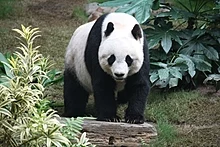
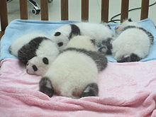

The giant panda (Ailuropoda melanoleuca; Chinese: 大熊猫; pinyin: dàxióngmāo),[5] also known as the panda bear or simply the panda, is a bear[6] native to south central China.[1]
It is characterised by large, black patches around its eyes, over the ears, and across its round body.
Giant panda at the Ocean Park Hong Kong
The name "giant panda" is sometimes used to distinguish it from the red panda, a neighboring musteloid.
Giant pandas in the wild will occasionally eat other grasses, wild tubers, or even meat in the form of birds, rodents, or carrion. In captivity, they may receive honey, eggs, fish, yams, shrub leaves, oranges, or bananas along with specially prepared food
In captivity, they may receive honey, eggs, fish, yams, shrub leaves, oranges, or bananas along with specially prepared food.
Panda cubs
